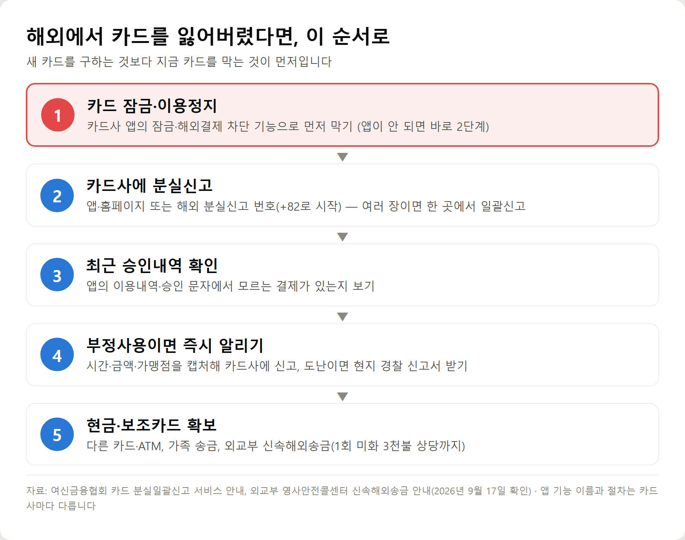
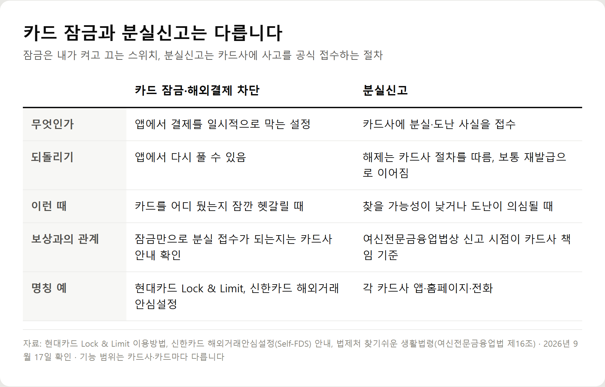
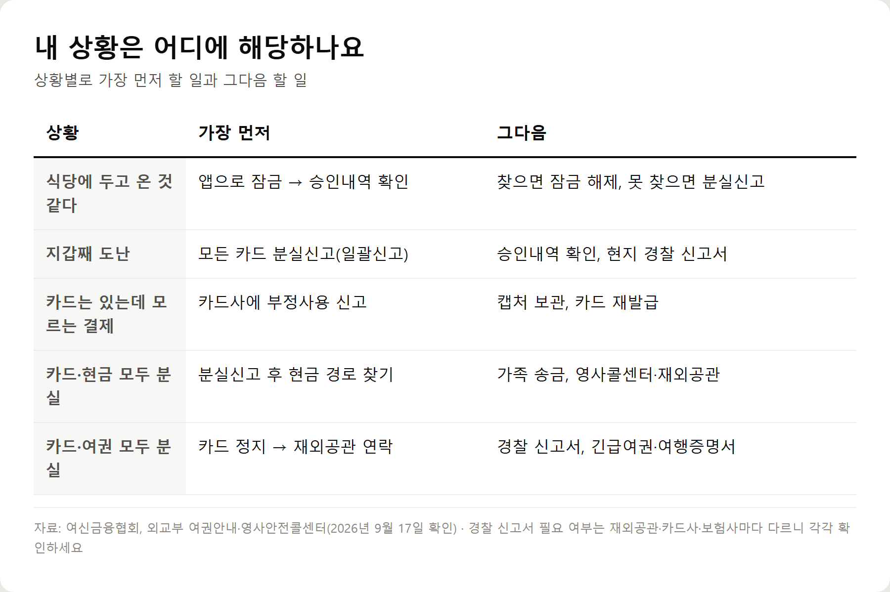
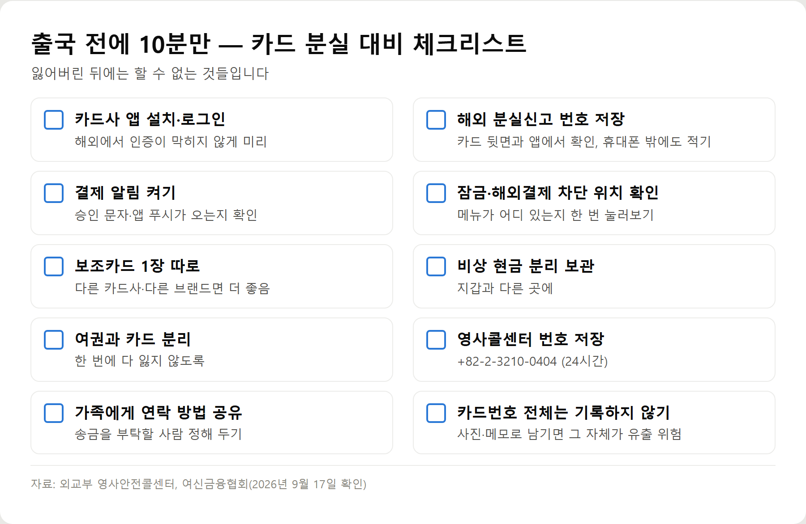

<meta charset="utf-8">
<title>해외에서 카드 잃어버렸을 때 가장 먼저 할 5단계 — 나의 투자 그리고 행복한 여행</title>
<meta name="description" content="해외에서 카드를 잃어버렸다면 새 카드보다 카드 잠금과 분실신고가 먼저입니다. 카드사별 해외 분실신고 번호(여신금융협회 기준), 부정사용 신고와 보상 기준, 현금 마련과 신속해외송금, 여권까지 잃어버렸을 때의 순서를 정리했습니다.">
<meta name="viewport" content="width=device-width, initial-scale=1">
<link rel="canonical" href="https://worldtraveler1.tistory.com/82">
<link rel="preconnect" href="https://fonts.googleapis.com">
<link rel="preconnect" href="https://fonts.gstatic.com" crossorigin>
<link rel="stylesheet" href="https://fonts.googleapis.com/css2?family=Hahmlet:wght@400;600;800&family=IBM+Plex+Mono:wght@400;500&family=IBM+Plex+Sans+KR:wght@300;400;500;600&display=swap">

<style>
  :root{
    --paper:#F2EEE6;--surface:#FAF8F3;--surface-2:#E7E1D5;
    --ink:#191510;--ink-2:#4A4235;--ink-3:#7D7364;
    --line:#D6CEBF;--line-soft:#E4DDD0;--accent:#B06A15;--accent-bright:#C2761A;
    --up:#E5484D;--down:#3B82F6;
    --f-display:"Hahmlet",'Nanum Myeongjo',"Apple SD Gothic Neo",serif;
    --f-body:"IBM Plex Sans KR","Apple SD Gothic Neo","Malgun Gothic",sans-serif;
    --f-mono:"IBM Plex Mono","SFMono-Regular",Consolas,monospace;
    --pad:clamp(20px,5vw,64px);
  }
  @media (prefers-color-scheme:dark){
    :root:not([data-theme="light"]){
      --paper:#0B1120;--surface:#121A2C;--surface-2:#1A2439;
      --ink:#E9EEF7;--ink-2:#A9B5C9;--ink-3:#72809A;
      --line:#26314A;--line-soft:#1D2739;--accent:#E8A33D;--accent-bright:#F0B45C;
    }
  }
  *{box-sizing:border-box;}
  body{margin:0;background:var(--paper);color:var(--ink);font-family:var(--f-body);
    font-weight:300;font-size:1rem;line-height:1.75;-webkit-font-smoothing:antialiased;}
  a{color:inherit;}
  img{max-width:100%;height:auto;}
  .wrap{max-width:760px;margin:0 auto;padding-inline:var(--pad);}
  .nav{position:sticky;top:0;z-index:20;background:color-mix(in srgb,var(--paper) 88%,transparent);
    backdrop-filter:saturate(180%) blur(12px);border-bottom:1px solid var(--line);}
  .nav-in{display:flex;align-items:center;justify-content:space-between;height:58px;}
  .brand{font-family:var(--f-display);font-weight:600;font-size:1rem;letter-spacing:-.02em;text-decoration:none;}
  .back{font-family:var(--f-mono);font-size:.72rem;color:var(--ink-3);text-decoration:none;}
  .article{padding-block:clamp(40px,7vw,72px) clamp(56px,9vw,96px);}
  .eyebrow{font-family:var(--f-mono);font-size:.68rem;letter-spacing:.16em;text-transform:uppercase;
    color:var(--accent);margin:0 0 14px;}
  h1{font-family:var(--f-display);font-weight:800;font-size:clamp(1.6rem,4.4vw,2.3rem);
    line-height:1.3;letter-spacing:-.03em;margin:0 0 16px;}
  .byline{font-family:var(--f-mono);font-size:.72rem;color:var(--ink-3);
    padding-bottom:24px;border-bottom:1px solid var(--line);margin-bottom:32px;}
  h2{font-family:var(--f-display);font-weight:600;font-size:1.25rem;letter-spacing:-.02em;margin:42px 0 14px;}
  h3{font-family:var(--f-display);font-weight:600;font-size:1.05rem;letter-spacing:-.02em;
    margin:30px 0 10px;padding-top:14px;border-top:1px solid var(--line-soft);}
  h3 .code{font-family:var(--f-mono);font-size:.7rem;font-weight:400;color:var(--ink-3);margin-left:6px;}
  p{margin:0 0 18px;color:var(--ink-2);}
  ul.checks{margin:0 0 18px;padding-left:20px;color:var(--ink-2);}
  ul.checks li{margin-bottom:8px;font-size:.94rem;}
  table{width:100%;border-collapse:collapse;font-size:.88rem;margin-bottom:8px;}
  th{font-family:var(--f-mono);font-size:.66rem;letter-spacing:.06em;text-transform:uppercase;
    color:var(--ink-3);text-align:right;padding:8px 6px;border-bottom:1px solid var(--line);}
  th:first-child{text-align:left;}
  td{padding:10px 6px;border-bottom:1px solid var(--line-soft);color:var(--ink-2);}
  td.num{font-family:var(--f-mono);text-align:right;font-variant-numeric:tabular-nums;}
  td.up{color:var(--up);} td.down{color:var(--down);}
  .scroll{overflow-x:auto;}
  figure{margin:22px 0;}
  figure img{display:block;border-radius:3px;background:var(--surface-2);}
  figcaption{margin-top:8px;font-family:var(--f-mono);font-size:.68rem;color:var(--ink-3);text-align:center;}
  .note{margin-top:34px;padding:16px 18px;border-left:3px solid var(--accent);
    background:var(--surface);border-radius:0 3px 3px 0;}
  .note p{margin:0;font-size:.85rem;color:var(--ink-3);}
  .foot{border-top:1px solid var(--line);background:var(--surface);padding-block:30px 38px;}
  .foot p{margin:0;font-size:.8rem;color:var(--ink-3);}
</style>

<nav class="nav">
  <div class="wrap nav-in">
    <a class="brand" href="../index.html">나의 투자 그리고 행복한 여행</a>
    <a class="back" href="../index.html#stocks">← 시황으로</a>
  </div>
</nav>

<main class="wrap article">
  <p class="eyebrow">Market</p>
  <h1>해외 신용카드 분실 대처 매뉴얼 — 잠금·분실신고·승인내역·현금 확보 순서 (2026)</h1>
  <p class="byline">여행 · 2026-09-17 기준</p>

  <p><b>이 포스팅은 네이버 쇼핑 커넥트 활동의 일환으로, 판매 발생 시 수수료를 제공받습니다.</b></p>
  <p><b>이 포스팅은 쿠팡 파트너스 활동의 일환으로, 구매 시 수수료를 제공받습니다.</b></p>
  <p>한 줄 요약: 해외에서 카드를 잃어버렸다면 ① 앱으로 잠금 ② 카드사 분실신고 ③ 승인내역 확인 ④ 부정사용 신고 ⑤ 현금·보조카드 확보 순서로 움직이면 됩니다.</p>
  <p>카드사별 해외 분실신고 번호는 여신금융협회 공시표, 긴급 송금과 여권 분실은 외교부 안내를 기준으로 2026년 9월 17일에 확인했습니다.</p>
  <h2>🚨 해외에서 카드 잃어버렸다면 — 긴급 행동 5단계</h2>
  <figure><figcaption>해외 카드 분실 즉시 행동순서 5단계 — 잠금, 분실신고, 승인내역 확인, 부정사용 신고, 현금·보조카드 확보</figcaption></figure>
  <p><b>① 카드 잠금·이용정지</b> — 카드사 앱을 열어 잠금이나 해외결제 차단부터 켭니다. 1분이면 됩니다. 앱이 안 열리거나 휴대폰까지 잃어버렸다면 바로 ②로 갑니다.</p>
  <p><b>② 카드사에 분실신고</b> — 앱·홈페이지 메뉴나 해외 분실신고 전화로 신고합니다. 카드가 여러 장이면 한 카드사에서 <b>분실일괄신고</b>를 요청하면 다른 회사 카드까지 같이 접수됩니다.</p>
  <p><b>③ 최근 승인내역 확인</b> — 앱의 이용내역과 승인 문자를 보고, 잃어버린 뒤 내가 하지 않은 결제가 있는지 확인합니다.</p>
  <p><b>④ 부정사용이 있으면 즉시 카드사에 알리기</b> — 결제 시간·금액·가맹점 이름을 캡처해 두고 카드사에 부정사용으로 신고합니다. 도난이라면 현지 경찰 신고서도 받아 둡니다.</p>
  <p><b>⑤ 현금·보조카드 확보</b> — 다른 카드, 해외 ATM, 가족 송금, 외교부 신속해외송금 중 지금 가능한 방법을 찾습니다.</p>
  <div class="note"><p>카드를 찾을 가능성이 있어도 잠금은 먼저 거세요. 찾으면 풀면 됩니다. 반대로 잠그지 않은 채 찾아다닌 시간은 되돌릴 수 없습니다.</p></div>
  <h2>카드사별 해외 분실신고 전화번호 (2026년 9월 기준)</h2>
  <p>아래 번호는 여신금융협회 소비자지원센터의 '카드 분실일괄신고 서비스' 안내에 게시된 번호입니다. 해외 번호로 전화하면 국제전화 요금이 나올 수 있습니다.</p>
  <div style="overflow-x:auto"><table border="1" cellpadding="6" style="border-collapse:collapse;width:100%;font-size:14px;line-height:1.5"><thead><tr><th style="background:#f3f5f8">카드사·은행</th><th style="background:#f3f5f8">국내</th><th style="background:#f3f5f8">해외에서 걸 때</th></tr></thead><tbody><tr><td>롯데카드</td><td>1588-8300</td><td>+82-2-1588-8300</td></tr><tr><td>비씨카드</td><td>1588-4515</td><td>+82-2-950-8510</td></tr><tr><td>삼성카드</td><td>1588-8900</td><td>+82-2-2000-8100</td></tr><tr><td>신한카드</td><td>1544-7200</td><td>+82-2-3420-7000</td></tr><tr><td>우리카드</td><td>1588-5300</td><td>+82-2-6958-9000</td></tr><tr><td>하나카드</td><td>1800-1111</td><td>+82-1800-1111</td></tr><tr><td>현대카드</td><td>1577-6200</td><td>+82-2-3015-9000</td></tr><tr><td>KB국민카드</td><td>1588-1788</td><td>+82-2-6300-7300</td></tr><tr><td>NH농협은행(농협카드)</td><td>1644-4000</td><td>+82-2-6942-6478</td></tr><tr><td>IBK기업은행</td><td>1566-2566</td><td>+82-31-888-8000 / +82-2-950-8510(비씨)</td></tr><tr><td>SC제일은행</td><td>1588-1599</td><td>+82-2-730-5442 / +82-2-950-8510(비씨)</td></tr><tr><td>한국씨티은행</td><td>1566-1000</td><td>+82-2-2004-1004</td></tr><tr><td>수협은행</td><td>1588-1515</td><td>+82-2-2013-0000</td></tr><tr><td>iM뱅크</td><td>1566-5050</td><td>+82-53-742-5050 / +82-2-950-8510(비씨)</td></tr><tr><td>부산은행</td><td>1544-6200</td><td>+82-2-950-8510(비씨) / +82-2-1588-6200</td></tr><tr><td>경남은행</td><td>1600-8585</td><td>+82-55-290-8585</td></tr><tr><td>광주은행</td><td>1588-3388</td><td>+82-62-239-5000</td></tr><tr><td>전북은행</td><td>1588-4477</td><td>+82-63-270-8585</td></tr><tr><td>제주은행</td><td>1588-0079</td><td>+82-64-759-2002</td></tr><tr><td>카카오뱅크</td><td>1599-8888</td><td>+82-2-6420-3333</td></tr><tr><td>케이뱅크</td><td>1522-1000</td><td>+82-2-3778-9111</td></tr><tr><td>토스뱅크</td><td>1661-7654</td><td>+82-2-6975-9000</td></tr><tr><td>MG새마을금고</td><td>1599-9000</td><td>+82-2-2192-0200</td></tr></tbody></table></div>
  <p>하나카드는 자사 고객센터 페이지에 '해외상담 82-1800-1111, 연결이 안 되면 82-2-3489-1000'을 함께 적어 두었습니다.</p>
  <p><b>번호 누르는 법</b> — 휴대폰에서 0을 길게 누르면 '+'가 입력됩니다. +82 다음에 표에 적힌 나머지 숫자를 그대로 누르면 됩니다. 번호는 바뀔 수 있으니 <b>카드 뒷면이나 카드사 앱에 적힌 번호가 다르면 그쪽을 따르세요.</b></p>
  <h2>분실·도난·부정결제, 무엇이 다르고 무엇부터 할까</h2>
  <p>세 경우 모두 '막는다'가 먼저지만, 그다음 할 일이 조금씩 다릅니다.</p>
  <div style="overflow-x:auto"><table border="1" cellpadding="6" style="border-collapse:collapse;width:100%;font-size:14px;line-height:1.5"><thead><tr><th style="background:#f3f5f8">구분</th><th style="background:#f3f5f8">상황</th><th style="background:#f3f5f8">가장 먼저</th><th style="background:#f3f5f8">추가로 할 일</th></tr></thead><tbody><tr><td>단순 분실</td><td>카드를 어디 뒀는지 모름</td><td>앱 잠금 → 승인내역 확인</td><td>마지막 사용 장소에 문의, 못 찾으면 분실신고</td></tr><tr><td>도난</td><td>지갑·가방째 사라짐</td><td>지갑 속 모든 카드 분실신고</td><td>현지 경찰 신고, 신분증·여권도 함께 확인</td></tr><tr><td>부정결제</td><td>카드는 있는데 모르는 결제</td><td>카드사에 부정사용 신고</td><td>카드 재발급, 온라인 결제 정보 유출 가능성 점검</td></tr></tbody></table></div>
  <p>세 번째 경우를 놓치기 쉽습니다. 카드가 손에 있으니 안심하는데, 카드번호가 온라인이나 복제 단말기로 새어 나갔다면 실물 없이도 결제됩니다. 잠금만 걸어 두지 말고 <b>카드사에 부정사용으로 신고하고 재발급</b>까지 받아야 합니다.</p>
  <h2>카드 잠금과 분실신고 차이 — 잠금만 해도 될까</h2>
  <figure><figcaption>카드 잠금(해외결제 차단)과 분실신고 비교 — 의미, 되돌리기, 쓰는 상황, 보상과의 관계</figcaption></figure>
  <p><b>카드 잠금</b>은 내가 앱에서 켜고 끄는 스위치입니다. 결제를 일시적으로 막고, 카드를 찾으면 다시 풀 수 있습니다.</p>
  <p><b>분실신고</b>는 카드사에 사고를 공식으로 접수하는 절차입니다. 보통 그 카드는 더 쓰지 않고 새로 발급받게 됩니다.</p>
  <p>카드사마다 이름도 범위도 다릅니다. 예를 들어 현대카드는 앱의 <b>Lock &amp; Limit</b> 메뉴에서 해외 이용을 제한·해제하고, 신한카드는 <b>해외거래안심설정</b>으로 해외 거래를 일시정지하거나 국가·금액·기간을 정할 수 있다고 안내합니다.</p>
  <p>잠금만으로 충분할까요? 카드를 곧 찾을 수 있을 때는 잠금이 편합니다. 하지만 <b>도난이 의심되거나 하루 안에 찾을 가능성이 낮다면 분실신고로 넘어가는 편이 안전합니다.</b> 법이 카드사 책임의 기준으로 삼는 건 '분실·도난 통지'이고, 앱 잠금이 그 통지로 처리되는지는 카드사 안내에서 확인해야 합니다.</p>
  <h2>카드사에 전화하기 전에 준비할 정보</h2>
  <p>해외에서 전화가 연결되면 생각보다 질문이 많습니다. 아래를 메모장에 먼저 적어 두면 통화가 짧아집니다. 카드사마다 요구하는 정보는 다를 수 있습니다.</p>
  <ul class="checks">
    <li>카드 명의자 이름</li>
    <li>카드 종류와 카드사(신용·체크, 가족카드 여부)</li>
    <li>카드번호 일부 또는 카드를 특정할 정보</li>
    <li>본인 확인 정보 — 일괄신고는 성명·휴대폰 번호·주민등록번호가 필요하다고 여신금융협회가 안내합니다</li>
    <li>현재 체류 국가와 도시</li>
    <li>지금 연락 가능한 전화번호(현지 번호 또는 로밍 번호)</li>
    <li>분실 추정 장소</li>
    <li>마지막으로 카드를 쓴 시간과 가맹점</li>
    <li>모르는 결제가 있는지 여부</li>
    <li>재발급 카드를 받을 주소(귀국 후 받을지 여부)</li>
  </ul>
  <h2>해외에서 카드사에 전화하는 방법</h2>
  <p><b>한국 카드사의 해외 분실신고 번호로 걸기</b> — 위 표의 +82 번호로 겁니다. 분실신고는 24시간 받는 카드사가 대부분이지만, 일반 상담은 운영시간이 따로 있을 수 있습니다.</p>
  <p><b>국제전화 요금</b> — 로밍 상태로 거는 국제전화는 요금이 붙습니다. ARS 대기가 길어질 수 있으니, 앱이나 홈페이지로 분실신고가 되는 카드라면 그쪽이 먼저입니다.</p>
  <p><b>휴대폰까지 잃어버렸다면</b> — 숙소 프런트나 동행자의 전화를 빌리고, 한국의 가족에게 연락해 대신 카드사에 알려 달라고 부탁하는 것도 방법입니다. 다만 대리 신고가 되는지, 무엇이 필요한지는 카드사 확인이 필요합니다.</p>
  <p><b>국제브랜드(Visa·Mastercard 등)에 거는 경우</b> — 한국에서 발급받은 카드의 사고 접수 창구는 기본적으로 <b>발급 카드사</b>입니다. 국제브랜드의 긴급지원은 참고로만 알아 두세요.</p>
  <div style="overflow-x:auto"><table border="1" cellpadding="6" style="border-collapse:collapse;width:100%;font-size:14px;line-height:1.5"><thead><tr><th style="background:#f3f5f8">브랜드</th><th style="background:#f3f5f8">공식 안내에서 확인한 내용</th><th style="background:#f3f5f8">확인하지 못한 것</th></tr></thead><tbody><tr><td>Visa</td><td>분실·도난 신고, 긴급 카드 교체, 긴급 현금 지원 안내. 교체 카드와 긴급 현금은 카드를 발급한 금융회사의 승인을 거침. 미국 내 번호 1-800-847-2911</td><td>한국 발급 카드가 이 긴급 서비스 대상인지</td></tr><tr><td>Mastercard</td><td>Mastercard Global Service로 분실·도난 신고와 긴급 카드 교체 안내. 미국 밖에서 +1-636-722-7111. 임시 카드는 발급사 승인 필요</td><td>한국 발급 카드의 임시 카드 발급 가능 여부</td></tr><tr><td>American Express</td><td>—</td><td>한국 발급 카드 기준 해외 긴급지원 내용</td></tr><tr><td>UnionPay</td><td>—</td><td>한국 발급 카드 기준 해외 긴급지원 내용</td></tr></tbody></table></div>
  <p>정리하면, 해외에서 '긴급 대체카드'나 '긴급 현금'이 필요하다면 국제브랜드에 먼저 걸기보다 <b>발급 카드사에 이런 서비스가 가능한지부터 물어보는 것</b>이 순서입니다.</p>
  <h2>카드 분실 후 부정사용 확인하는 법과 신고 절차</h2>
  <p>분실신고를 했다고 끝이 아닙니다. 신고 전에 이미 결제가 됐을 수 있기 때문입니다.</p>
  <p><b>1. 앱에서 최근 승인내역 보기</b> — '이용내역'보다 '승인내역'이 빠릅니다. 해외 결제는 매입(청구 확정)까지 시간이 걸려 이용내역에 늦게 뜨는 경우가 있습니다.</p>
  <p><b>2. 승인 문자·앱 알림 확인</b> — 알림을 켜 두었다면 잃어버린 뒤 온 알림이 곧 증거입니다.</p>
  <p><b>3. 모르는 결제는 바로 카드사에 연락</b> — 결제가 '승인 대기'로 떠 있어도 알립니다.</p>
  <p><b>4. 기록 남기기</b> — 결제 시간(현지 시각과 한국 시각), 금액, 통화, 가맹점 이름을 캡처합니다. 분실을 알아챈 시각과 마지막으로 직접 결제한 시각도 적어 둡니다.</p>
  <p><b>5. 경찰 신고가 필요한 경우</b> — 도난이거나 부정사용 금액이 있다면 현지 경찰 신고 확인서를 받아 두세요. 카드사 보상 심사나 여행자보험 청구에서 요구하는 경우가 있습니다. 필요한 서류는 카드사와 보험사에 각각 확인합니다.</p>
  <p><b>6. 카드사 이의제기·부정사용 조사</b> — 카드사가 신고 내용을 조사해 보상 여부를 정합니다. 처리 기간과 결과는 사안과 카드사에 따라 다릅니다.</p>
  <p><b>부정사용 책임은 어디까지일까</b> — 여신전문금융업법 제16조는 카드사가 <b>분실·도난 통지를 받은 때부터</b> 책임을 지고, 통지 전 사용에 대해서도 <b>통지일부터 60일 전까지의 범위</b>에서 책임을 진다고 정합니다.</p>
  <p>다만 회원이 책임을 지도록 한 약관 내용이 있으면 그에 따를 수 있습니다. 비밀번호 관리 소홀, 카드를 남에게 맡긴 경우처럼 회원의 과실이 인정되면 보상이 줄어들 수 있습니다. 반대로 폭력이나 생명·신체 위협 때문에 비밀번호를 알려준 경우처럼 회원에게 고의·과실이 없으면 예외로 봅니다.</p>
  <p>해외 결제라고 해서 이 원칙이 달라진다는 공식 안내는 찾지 못했지만, 실제 보상 범위는 카드 약관과 카드사 조사로 결정됩니다. <b>'무조건 전액 보상'이라고 단정할 수는 없습니다.</b></p>
  <h2>해외에서 현금이 필요할 때 — 5가지 방법 비교</h2>
  <p>카드를 잃어버렸을 때 가장 현실적인 문제는 당장 쓸 돈입니다. 가능한 방법을 빠른 순서로 놓았습니다. 수수료와 가능 여부는 서비스·카드마다 달라 숫자는 적지 않았습니다.</p>
  <div style="overflow-x:auto"><table border="1" cellpadding="6" style="border-collapse:collapse;width:100%;font-size:14px;line-height:1.5"><thead><tr><th style="background:#f3f5f8">방법</th><th style="background:#f3f5f8">장점</th><th style="background:#f3f5f8">주의할 점</th></tr></thead><tbody><tr><td>다른 카드 사용</td><td>가장 빠름, 추가 절차 없음</td><td>그 카드도 같은 지갑에 있었다면 함께 정지됐을 수 있음</td></tr><tr><td>해외 ATM 인출</td><td>현지 통화를 바로 확보</td><td>해외 인출이 가능한 카드·비밀번호 필요, 수수료는 카드별로 다름</td></tr><tr><td>카드사 긴급지원 문의</td><td>공식 절차</td><td>한국 발급 카드에 긴급 현금·대체카드가 가능한지 카드사 확인 필요</td></tr><tr><td>가족·지인 송금</td><td>금액을 비교적 자유롭게 정함</td><td>받을 수단(계좌·앱·송금업체 수령)이 현지에 있어야 함</td></tr><tr><td>외교부 신속해외송금</td><td>카드·현금이 모두 없어도 가능</td><td>1회 미화 3천불 상당까지, 재외공관 근무시간 중 방문 원칙</td></tr></tbody></table></div>
  <p><b>신속해외송금은 이렇게 진행됩니다(외교부 영사안전콜센터 안내).</b> 여행자가 현지 대사관·총영사관에 긴급 경비 지원을 신청하고, 승인되면 한국의 가족이 영사안전콜센터에 절차를 문의한 뒤 외교부 협력은행(우리은행, 농협) 계좌로 입금합니다. 돈은 재외공관에서 받습니다.</p>
  <p>지원 한도는 1회 미화 3천불 상당이지만 공관의 외화 보유 사정에 따라 더 적을 수 있습니다. 지급은 달러·엔·유로·파운드가 원칙이고, 불가피하면 현지 화폐로 줍니다. 불법·상업·정기 송금 목적은 지원하지 않습니다.</p>
  <p>해외 ATM 수수료와 인출 한도는 카드마다 차이가 커서, 보조카드를 고를 때 미리 비교해 두는 것이 좋습니다.</p>
  <h2>보조카드가 왜 중요한가 — 장기여행이라면 더더욱</h2>
  <div style="overflow-x:auto"><table border="1" cellpadding="6" style="border-collapse:collapse;width:100%;font-size:14px;line-height:1.5"><thead><tr><th style="background:#f3f5f8">준비 방식</th><th style="background:#f3f5f8">카드를 잃어버리면</th></tr></thead><tbody><tr><td>메인 카드 1장만</td><td>결제·인출 수단이 한꺼번에 사라짐. 재발급 전까지 송금에 의존</td></tr><tr><td>메인 카드 + 보조카드(따로 보관)</td><td>하나를 막아도 다른 카드로 여행을 이어갈 수 있음</td></tr><tr><td>카드 + 비상 현금(따로 보관)</td><td>ATM이 멀거나 카드가 안 되는 곳에서도 하루 이틀 버틸 수 있음</td></tr></tbody></table></div>
  <p>핵심은 장수가 아니라 <b>보관 위치</b>입니다. 보조카드를 메인 카드와 같은 지갑에 넣으면 한 번에 같이 사라집니다. 가능하면 다른 카드사, 다른 국제브랜드로 준비하면 한쪽 결제망에 문제가 생겨도 대비가 됩니다.</p>
  <p>해외에서 카드를 재발급받을 수 있는지, 해외 주소로 보내 주는지는 카드사마다 다릅니다. 새 카드가 언제 손에 들어올지 모르니 여행이 길다면 <b>귀국 전까지 보조카드로 버틸 수 있는지</b>를 기준으로 준비하세요.</p>
  <h2>해외에서 여권과 지갑을 함께 잃어버렸다면</h2>
  <p>카드와 여권을 같은 가방에 넣었다면 흔히 함께 사라집니다. 이때는 순서가 조금 늘어납니다.</p>
  <ul class="checks">
    <li>1. 카드 정지 — 앱 잠금 또는 분실(일괄)신고</li>
    <li>2. 재외공관 연락 — 관할 대사관·총영사관에 여권 분실신고와 방문 방법 확인</li>
    <li>3. 현지 경찰 신고 — 도난이라면 신고 확인서를 받습니다(공관이 요구하는지 함께 확인)</li>
    <li>4. 긴급여권 또는 여행증명서 — 재외공관에서 발급 절차와 준비 서류 안내를 받습니다</li>
    <li>5. 일정 재조정 — 항공사·숙소에 연락해 출국일과 체크아웃을 조정</li>
    <li>6. 영사안전콜센터 +82-2-3210-0404 — 공관 연락처를 모르거나 통역이 필요할 때</li>
  </ul>
  <p>외교부 여권안내는 해외에서 여권을 잃어버리면 가까운 재외공관에 분실신고를 하고 새 여권을 발급받으라고 안내합니다. 여권분실신고서는 외교부 여권안내 홈페이지에서도 받을 수 있습니다.</p>
  <p>주의할 점도 하나 있습니다. <b>현지 경찰에 여권 분실을 신고한 뒤 여권을 다시 찾더라도, 그 여권으로는 해당 국가 출입국에서 불이익을 받을 수 있다</b>고 외교부는 안내합니다. 찾은 여권을 그대로 쓰지 말고 공관에 먼저 물어보세요.</p>
  <p>영사안전콜센터는 24시간 연중무휴로 운영하며, 해외 긴급 상황에서 영어·중국어·일본어·베트남어·프랑스어·러시아어·스페인어 통역을 지원합니다. 수수료와 필요 서류는 공관과 여권 종류에 따라 다르니 공관 안내를 따르세요.</p>
  <h2>나라별로 무엇이 다를까 — 일본·미국·유럽·동남아·인도·남미</h2>
  <p>카드 분실 대응의 기본 순서는 어느 나라든 같습니다. <b>막고, 신고하고, 확인하고, 돈을 확보한다.</b> 달라지는 건 현지 쪽 사정입니다.</p>
  <ul class="checks">
    <li>현지 경찰 신고 — 신고 창구, 확인서 발급 방식, 언어 지원이 나라와 도시마다 다릅니다</li>
    <li>재외공관 — 관할 지역이 넓은 나라(미국 등)는 가장 가까운 공관까지 거리가 멀 수 있어, 방문 전에 전화로 관할과 업무시간을 확인해야 합니다</li>
    <li>ATM — 해외 카드 인출이 되는 기기, 인출 한도, 현지 은행 수수료가 다릅니다</li>
    <li>결제 환경 — 현금 비중이 높은 지역에서는 카드가 있어도 비상 현금이 더 중요해집니다</li>
    <li>시차 — 한국 카드사 분실신고는 24시간이지만 일반 상담·재발급 업무는 한국 영업시간 기준일 수 있습니다</li>
  </ul>
  <p>나라별 치안 정보와 재외공관 연락처는 외교부 해외안전여행 누리집(0404.go.kr)에서 국가를 골라 확인할 수 있습니다. 확인하지 않은 현지 제도를 일반화해 적지는 않았습니다.</p>
  <h2>상황별 시나리오 — 내 경우엔 무엇부터</h2>
  <figure><figcaption>해외 카드 분실 상황별 대처표 — 식당에 두고 옴, 지갑 도난, 모르는 결제, 카드·현금 분실, 카드·여권 분실</figcaption></figure>
  <p><b>상황 A. 카드를 식당에 두고 온 것 같다</b> — 앱으로 잠금부터 겁니다. 승인내역에 그 뒤 결제가 없으면 식당에 연락하거나 다시 가 봅니다. 찾으면 잠금을 풀고, 찾지 못했거나 누가 만졌을 가능성이 있으면 분실신고와 재발급으로 넘어갑니다.</p>
  <p><b>상황 B. 지갑을 통째로 도난당했다</b> — 지갑에 있던 카드를 전부 막습니다. 어떤 카드가 있었는지 헷갈리면 한 카드사에 분실일괄신고를 요청하며 '전체 카드사'를 선택할 수 있습니다. 그다음 승인내역 확인, 현지 경찰 신고 순서입니다.</p>
  <p><b>상황 C. 카드는 있는데 모르는 결제가 생겼다</b> — 카드사에 부정사용으로 신고하고 결제 캡처를 보관합니다. 잠금만으로 끝내지 말고 재발급을 받으세요. 같은 카드를 등록해 둔 해외 사이트·앱이 있다면 결제수단도 바꿉니다.</p>
  <p><b>상황 D. 카드와 현금을 모두 잃어버렸다</b> — 카드를 막은 뒤 돈 마련 경로를 찾습니다. 동행자 카드, 가족 송금, 그래도 어렵다면 재외공관을 통한 신속해외송금 순서로 알아봅니다. 숙소비가 걸려 있다면 숙소에 사정을 먼저 알리세요.</p>
  <p><b>상황 E. 카드와 여권을 모두 잃어버렸다</b> — 카드 정지 → 재외공관 연락 → 경찰 신고 확인서 → 긴급여권·여행증명서 → 항공·숙소 조정 순서입니다. 연락처를 모르면 영사안전콜센터(+82-2-3210-0404)에 먼저 전화합니다.</p>
  <h2>해외여행 중 카드 분실을 예방하는 방법</h2>
  <p>잃어버린 뒤의 대처보다 효과가 큰 건 '한 번에 다 잃지 않게' 나눠 두는 것입니다.</p>
  <ul class="checks">
    <li>카드는 2장 이상, 서로 다른 곳에 보관</li>
    <li>카드 앞뒷면 사진이나 카드번호 전체를 휴대폰·클라우드에 남기지 않기 — 카드사 이름과 분실신고 번호만 적어 두면 충분합니다</li>
    <li>카드사 앱 설치와 로그인, 해외결제 알림 켜기</li>
    <li>해외 분실신고 번호를 휴대폰 밖(수첩 등)에도 적기</li>
    <li>ATM에서 돈을 뽑은 뒤 카드가 나왔는지 확인하고 자리 뜨기</li>
    <li>지갑과 여권은 다른 주머니·다른 가방에</li>
    <li>비상 현금은 지갑이 아닌 곳에</li>
    <li>가족에게 여행 일정과 긴급 연락 방법 공유</li>
  </ul>
  <p>몸에 붙이는 보관용품도 방법입니다. 옷 안쪽에 차는 <b>안전복대</b>는 보조카드와 비상 현금, 여권을 메인 지갑과 떼어 두는 용도로 많이 씁니다. 제품명에 붙은 'RFID 차단'은 제조사가 내세우는 기능이며, 이것만으로 카드 부정사용을 막는다고 볼 수는 없습니다.</p>
  <p><a href="https://brandconnect.naver.com/affiliates/996638580566560?channelProductNo=10385542463" target="_blank" rel="sponsored noopener">네이버에서 보기 — 브라이튼 RFID 차단 허리 안전복대 (브라이튼몰)</a></p>
  <p><a href="https://link.coupang.com/a/g6ZDV2obi8" target="_blank" rel="sponsored noopener">쿠팡에서 트래블큐브 RFID 안전복대 보기</a></p>
  <p><a href="https://brandconnect.naver.com/affiliates/996638623239040?channelProductNo=9881194600" target="_blank" rel="sponsored noopener">네이버에서 보기 — 에가든 트래블러 패스포트 RFID 차단 여권지갑 (에가든 스토어)</a></p>
  <p>지갑에 넣어 두는 <b>위치 추적 태그</b>는 지갑을 식당이나 택시에 두고 왔을 때 마지막 위치를 확인하는 데 쓰입니다. 갤럭시 스마트태그2는 갤럭시 휴대폰, 에어태그는 아이폰과 연동되므로 휴대폰 기종에 맞춰 골라야 합니다. 도난이 의심될 때 위치를 보고 직접 찾아가기보다 경찰에 알리는 편이 안전합니다.</p>
  <p><a href="https://brandconnect.naver.com/affiliates/996638537927712?channelProductNo=9358730082" target="_blank" rel="sponsored noopener">네이버에서 보기 — 삼성 갤럭시 스마트태그2 (삼성공식파트너 스토어)</a></p>
  <p><a href="https://link.coupang.com/a/g6ZEjntep2" target="_blank" rel="sponsored noopener">쿠팡에서 갤럭시 스마트태그2 보기</a></p>
  <p><a href="https://brandconnect.naver.com/affiliates/996638495288160?channelProductNo=13030012589" target="_blank" rel="sponsored noopener">네이버에서 보기 — 애플 에어태그 2세대 1개 팩 (애플 공식 브랜드스토어)</a></p>
  <p><a href="https://link.coupang.com/a/g6ZEGJXLdk" target="_blank" rel="sponsored noopener">쿠팡에서 애플 에어태그 2세대 보기</a></p>
  <p>휴대폰은 카드 잠금과 분실신고를 하는 도구이기도 합니다. 휴대폰까지 같이 잃어버리면 1단계가 막히기 때문에, 붐비는 곳에서는 <b>휴대폰 스트랩</b>으로 몸에 연결해 두는 여행자도 많습니다.</p>
  <p><a href="https://link.coupang.com/a/g6ZE4cIuNU" target="_blank" rel="sponsored noopener">쿠팡에서 신지모루 도난방지 핸드폰 스트랩 보기</a></p>
  <h2>출국 전 체크리스트 — 해외여행 가기 전에 반드시 해둘 것</h2>
  <figure><figcaption>해외여행 출국 전 카드 분실 대비 체크리스트 10가지</figcaption></figure>
  <ul class="checks">
    <li>□ 카드사 앱 설치·로그인(해외에서 본인인증이 막히지 않게 미리)</li>
    <li>□ 해외 분실신고 번호 확인 — 카드 뒷면·앱·이 글의 표</li>
    <li>□ 해외결제 가능 여부와 해외결제 차단 설정 확인</li>
    <li>□ 카드 잠금 기능이 앱 어디에 있는지 확인</li>
    <li>□ 승인 문자·앱 결제 알림 설정</li>
    <li>□ 보조카드 준비(가능하면 다른 카드사·다른 브랜드)</li>
    <li>□ 비상 현금 준비와 분리 보관 계획</li>
    <li>□ 여권과 카드 분리 보관</li>
    <li>□ 영사안전콜센터 +82-2-3210-0404, 숙소 주소 등 중요한 연락처를 오프라인으로 저장</li>
    <li>□ 여행자보험 가입 여부와 도난 시 청구 서류 확인</li>
  </ul>
  <h2>해외 카드 분실 FAQ — 자주 묻는 질문 12가지</h2>
  <p>Q1. 해외에서 카드를 잃어버리면 가장 먼저 무엇을 해야 하나요?</p>
  <p>카드 사용을 막는 것입니다. 카드사 앱에서 잠금이나 해외결제 차단을 켜고, 바로 이어서 분실신고를 합니다.</p>
  <p>Q2. 해외에서 카드 분실신고는 어떻게 하나요?</p>
  <p>카드사 앱·홈페이지의 분실신고 메뉴나 해외 분실신고 번호(+82로 시작)로 합니다. 여러 장이면 한 카드사에 분실일괄신고를 요청할 수 있습니다.</p>
  <p>Q3. 해외에서 카드 잠금만 해도 되나요?</p>
  <p>곧 찾을 가능성이 높을 때는 잠금으로 버틸 수 있습니다. 도난이 의심되거나 찾기 어렵다면 분실신고까지 하세요. 법적으로 카드사 책임의 기준이 되는 건 분실·도난 통지입니다.</p>
  <p>Q4. 해외에서 카드를 잃어버리면 재발급받을 수 있나요?</p>
  <p>재발급은 분실신고 뒤 카드사 앱이나 고객센터로 신청합니다. 다만 해외로 배송해 주는지는 카드사마다 다릅니다. 신청할 때 받을 주소와 도착 시기를 꼭 확인하세요.</p>
  <p>Q5. 해외에서 카드가 부정사용되면 어떻게 하나요?</p>
  <p>즉시 카드사에 부정사용으로 신고하고, 결제 시간·금액·가맹점을 캡처해 둡니다. 도난이면 현지 경찰 신고 확인서도 받아 둡니다. 보상 여부는 카드사 조사와 약관에 따라 정해집니다.</p>
  <p>Q6. 해외 ATM에서 현금을 뽑을 수 있나요?</p>
  <p>해외 인출이 가능한 다른 카드와 비밀번호가 있으면 됩니다. 정지한 카드로는 뽑을 수 없고, 인출 수수료·한도는 카드마다 다릅니다.</p>
  <p>Q7. 카드와 현금을 모두 잃어버리면 어떻게 하나요?</p>
  <p>카드를 막은 뒤 동행자 도움이나 가족 송금을 알아보고, 어렵다면 재외공관에 외교부 신속해외송금(1회 미화 3천불 상당까지)을 신청할 수 있습니다.</p>
  <p>Q8. 해외에서 카드사에 전화하려면 어떻게 하나요?</p>
  <p>휴대폰에서 0을 길게 눌러 +를 입력한 뒤 82와 나머지 번호를 누릅니다. 국제전화 요금이 나올 수 있으니 앱 신고가 되면 앱이 먼저입니다.</p>
  <p>Q9. 카드와 여권을 같이 잃어버리면 어떻게 하나요?</p>
  <p>카드 정지 후 관할 재외공관에 연락해 여권 분실신고와 긴급여권·여행증명서 절차를 안내받습니다. 공관 연락처를 모르면 영사안전콜센터 +82-2-3210-0404로 전화하세요.</p>
  <p>Q10. 해외여행 때 카드를 몇 장 가져가야 하나요?</p>
  <p>정해진 장수는 없지만 최소 2장을 서로 다른 곳에 보관하는 것이 기본입니다. 다른 카드사·다른 국제브랜드면 한쪽에 문제가 생겨도 대비가 됩니다.</p>
  <p>Q11. 체크카드도 해외에서 분실신고할 수 있나요?</p>
  <p>됩니다. 여신금융협회 분실일괄신고 대상에도 신용카드와 함께 체크카드·가족카드가 포함됩니다(법인카드 제외). 체크카드는 계좌에서 바로 돈이 빠져나가니 더 서둘러 막으세요.</p>
  <p>Q12. 해외에서 카드 분실을 예방하려면 어떻게 해야 하나요?</p>
  <p>카드를 나눠 보관하고, 결제 알림을 켜고, 분실신고 번호를 휴대폰 밖에도 적어 두세요. ATM 이용 후 카드 회수를 확인하고, 지갑과 여권은 따로 둡니다.</p>
  <h2>정리하면</h2>
  <p>해외에서 카드를 잃어버렸을 때 순서는 하나입니다. <b>잠그고, 신고하고, 승인내역을 보고, 모르는 결제는 알리고, 그다음에 돈을 구합니다.</b></p>
  <p>그리고 이 순서가 통하려면 출국 전에 준비가 되어 있어야 합니다. 카드사 앱, 해외 분실신고 번호, 따로 보관한 보조카드 세 가지만 챙겨도 대부분의 상황에서 여행을 이어갈 수 있습니다.</p>
  <p><b>함께 보면 좋은 글</b> — <a href="https://danielmoon82.github.io/moon/posts/travel-card-2026-09-17.html">해외여행 카드 추천 2026 — 트래블카드 6종 수수료·ATM 조건 비교(보조카드 고를 때)</a></p>
  <div class="note"><p>이 글은 해외에서 카드를 잃어버렸을 때의 일반적인 대응 순서를 안내하기 위한 것이며, 실제 절차·보상 범위·수수료·재발급 방법은 카드사와 카드 약관, 체류 국가에 따라 다릅니다. 분실신고 번호는 여신금융협회 소비자지원센터 카드 분실일괄신고 서비스 게시표(2026년 9월 17일 조회), 신속해외송금과 영사안전콜센터는 외교부 영사안전콜센터, 여권 분실은 외교부 여권안내, 부정사용 책임은 법제처 찾기쉬운 생활법령정보(여신전문금융업법 제16조), 국제브랜드 내용은 Visa·Mastercard 공식 사이트 안내를 기준으로 했습니다. 번호와 제도는 바뀔 수 있으니 카드 뒷면과 카드사 앱의 최신 안내를 우선하세요.</p></div>
</main>

<footer class="foot">
  <div class="wrap"><p>나의 투자 그리고 행복한 여행 · 투자 판단의 참고 자료일 뿐, 매수·매도를 권유하지 않습니다.</p></div>
</footer>
